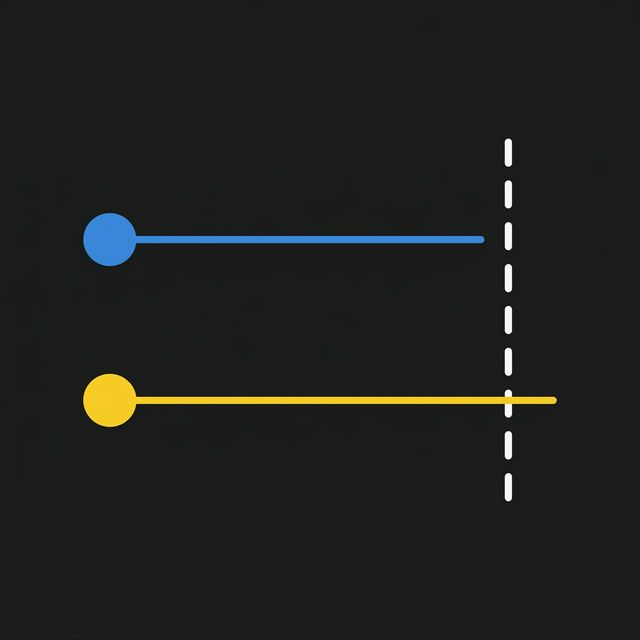

Simple Past kapalı bir sistemdir. Bir fotoğraf karesi gibi geçmişteki o anı dondurur. Olayın günümüzle olan bağlantısı kopuktur.
Present Perfect ise geçmişten şu ana çekilen bir köprüdür. Eylem geçmişte yaşanmış olsa da, sonucu, etkisi veya önemi şu anki bağlamı doğrudan şekillendirir.